The console app for people who manage switches.
Plug in a console cable or open an SSH session, and everything else you do with network gear is in the same window: config backups, a map of what plugs into what, pushing changes to many devices, and the troubleshooting tools you reach for every day.
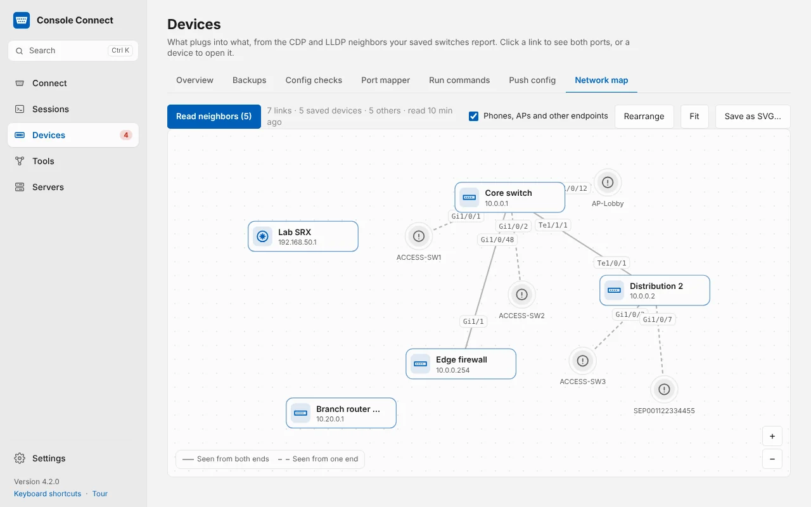
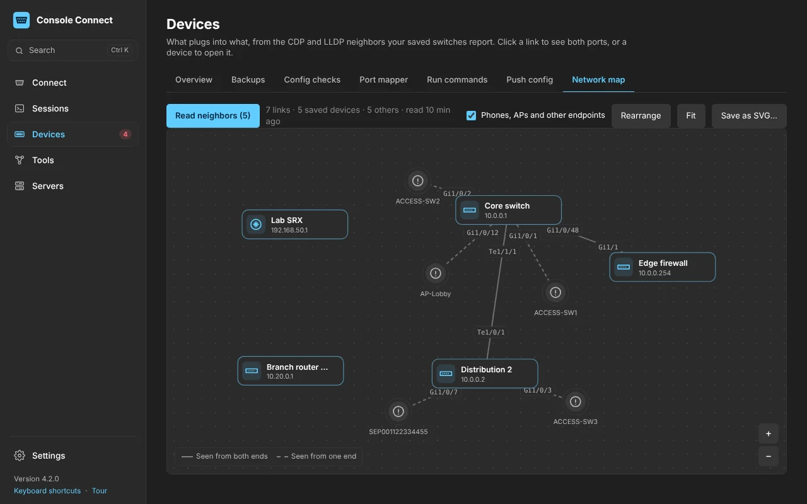
Plug in a cable and you’re at the prompt.
Console Connect spots USB console cables and built-in USB-C console ports the moment they’re plugged in. Pick a baud rate, press Connect, and a sign-in profile can type the username, password and enable password for you.
- Serial and network on separate tabs. SSH with keys and jump hosts, Telnet, SFTP and Wi-Fi console adapters.
- Reconnects on its own. Pull the cable mid-session; plug it back in and the session carries on.
- XMODEM and Send Break for ROMMON and boot loaders, built in.
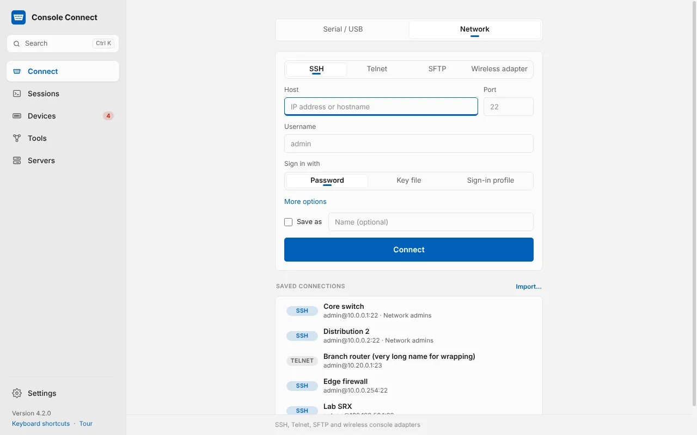
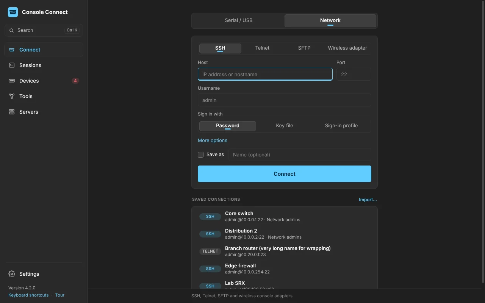
A terminal built for network gear.
Tabs and split panes, tab names taken from the device prompt, and keyword highlighting that makes errors and interface changes stand out. Quick command buttons change with the type of device you’re on.
- Every session is logged per device, and Session history searches all of them for a command or a MAC address.
- Send a config file line by line. It waits for the prompt and stops at the first rejected line.
- Right-click an IP address to ping it, trace it or check its ports.
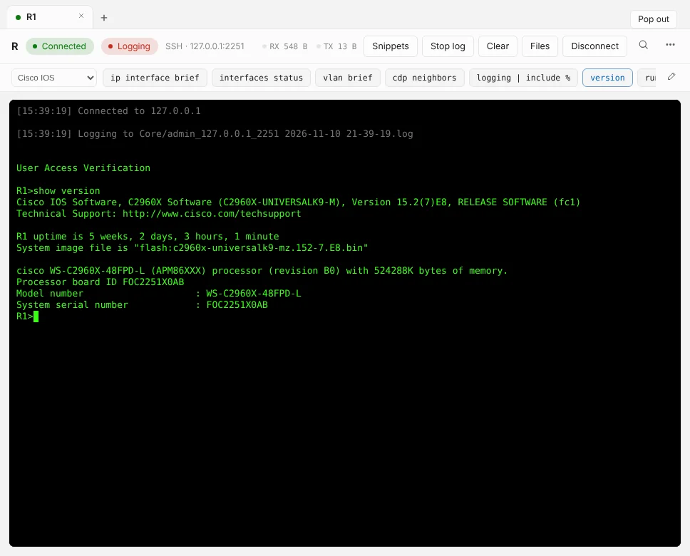
Every switch, router and firewall, and how each one is doing.
Save your devices once with folders, tags and notes. Each one shows whether it’s online, when its config was last backed up, which config checks it fails, its ports and the software it runs.
- Live status with alerts. A notification when a device stops answering, and another when it’s back.
- Firmware check. Set the version each device type should run and see who’s behind.
- Import from a CSV file, PuTTY or SecureCRT.
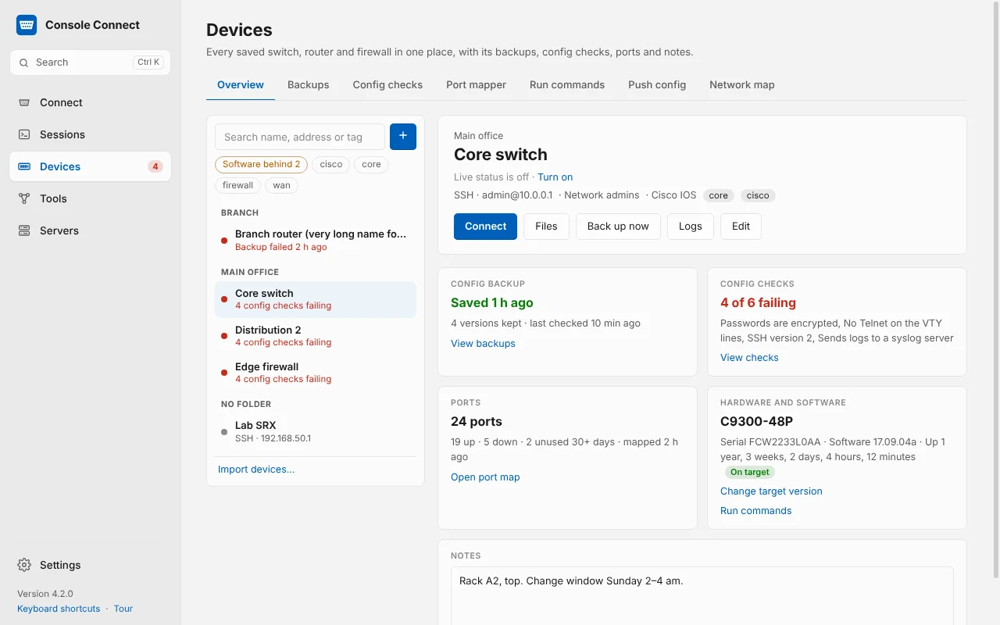
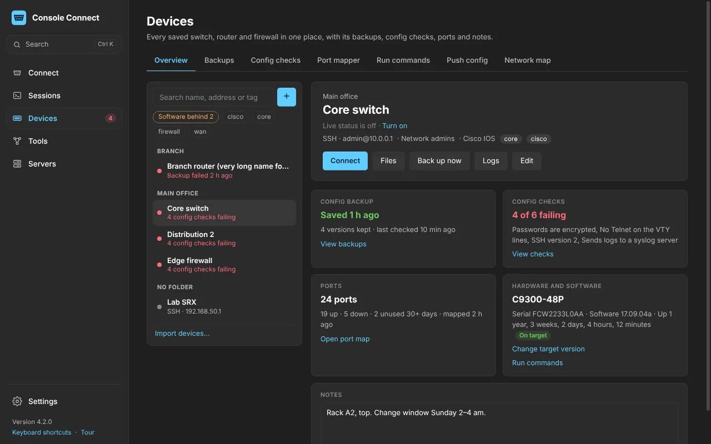
Know exactly what changed, and who changed it.
Back up configs over SSH or Telnet by hand or on a schedule. Every version that changed is kept and compared line by line. With the built-in syslog server running, a device that reports a change is backed up a moment later, labelled with the user and the address it came from.
- Restore any version over TFTP or straight through a terminal.
- Config checks such as “no Telnet on the VTY lines”, run after every backup.
- Keep them anywhere: a OneDrive or shared folder, with Git history if you want it.
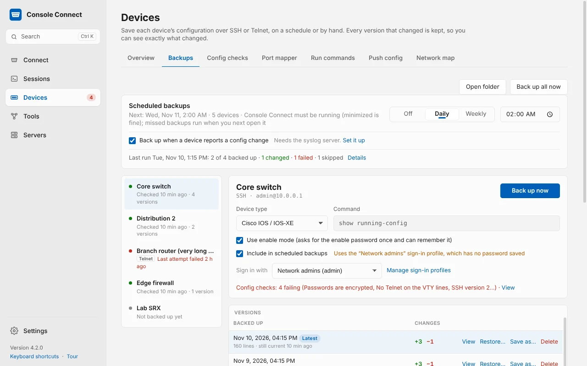
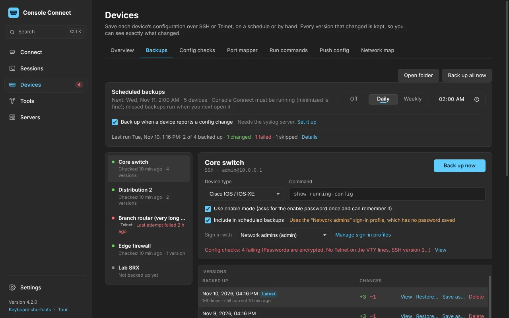
Find a free port. Change fifty switches. Same afternoon.
The port mapper shows every port as up, down or unused for 30 days, with its VLAN and description. Push config sends one change to many devices, with {{fields}} for the values that differ, a preview of every command, and a backup before and after each device.
- One device at a time, stopping at the first line a device rejects.
- Run commands on many devices at once and collect models, serial numbers and versions.
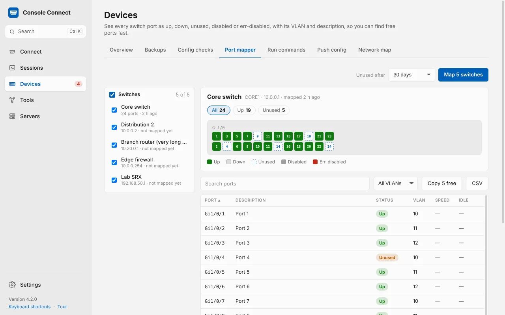
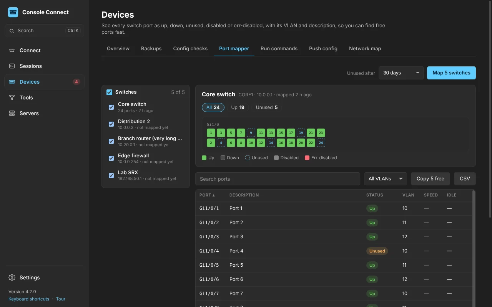
The tools you’d otherwise open five other apps for.
Test a host
Diagnose step by step, ping, traceroute, DNS lookup and port check, sharing the address you typed.
Find devices
Scan a subnet for every device with its name, MAC address, maker and open ports.
Syslog server
Logs from your devices, live, filtered by device and severity, saved to daily files.
TFTP server
Serve firmware and configs to devices and receive the files they upload, with the commands to paste.
Subnet calculator
Networks, masks and host ranges, splitting, VLSM, route summaries and IPv6.
Speed and Wi-Fi
Your internet speed and latency, and exactly how this computer is connected.
Search anything
Ctrl K finds a device, a serial port, a page or a setting, and Enter connects.
Move to a new computer
Devices, sign-in profiles and settings in one file, locked with a password you choose.
Updates itself
New versions download in the background and install when you restart.
Get Console Connect 4.2.1
Free to download. Install it once and it keeps itself up to date. Console Connect is still in development, so expect frequent updates.
Not sure which Mac you have? Open the Apple menu › About This Mac. “Chip: Apple M…” means Apple silicon; “Processor: Intel” means Intel. Checksums and older versions are on the releases page.
Opening it the first time
Windows and macOS ask once before they open an app downloaded from the internet. After that it opens like any other app.
Windows
- Run Console-Connect-Setup-Windows.exe.
- If Windows shows Windows protected your PC, click More info, then Run anyway.
- Click Install, then Finish. No administrator password is needed.
Already have an older version? Run the new installer. It updates in place and keeps your devices and settings.
Mac
- Open the zip and drag Console Connect into Applications.
- Open it. If macOS says it can’t check the app, open System Settings › Privacy & Security.
- Scroll down and click Open Anyway, then Open.
You only do this once. A USB console cable usually needs no driver on a Mac; on Windows, Prolific and FTDI cables usually get their driver from Windows Update.
Before you download
Is it finished?
Not yet. Console Connect is still being worked on. It’s used every day on real switches and routers, but some features are new, some will change, and you may hit the odd bug. Updates arrive automatically as it improves.
Is it free?
Yes. Console Connect is free to download and use.
Why does Windows or macOS warn me when I open it?
Console Connect isn’t signed with a Microsoft or Apple developer certificate yet, so both systems ask you to confirm the first time. That will go away when it’s published through Microsoft and Apple. The steps are under First launch.
Where are my passwords kept?
Only on your computer, encrypted by Windows or the macOS keychain. Console Connect has no account and no cloud service.
What does it connect to on the internet?
Only your own devices, GitHub to check for updates, and Cloudflare’s servers when you run a speed test. You can turn the update check off in Settings.
Which console cables work?
USB console cables with FTDI, Prolific, Silicon Labs or CH340 chips, built-in USB-C and mini-USB console ports on newer switches, and Wi-Fi or Ethernet console adapters.
Which devices does it understand?
Backups, config checks, the port mapper, Push config and the network map read Cisco IOS and IOS-XE, NX-OS, ASA, Arista EOS, Juniper Junos, Aruba and MikroTik. The terminal works with anything that has a console.
How do updates work?
Console Connect checks for a new version every few hours, downloads it in the background and installs it when you restart or quit. Settings › General › Check now does it straight away.
Your data stays on your computer
Console Connect doesn’t collect or send any personal data, usage data or analytics. There’s no account to create.
Stored locally
Saved devices, sessions, logs, backups and settings live only on your computer. Passwords are encrypted by Windows or the macOS keychain.
What it connects to
Only the devices you connect to, GitHub to check for updates, and Cloudflare when you run a speed test. You can turn the update check off in Settings.
This website
No cookies, no tracking and no analytics. It’s hosted on GitHub Pages, which keeps standard server logs, and downloads come from GitHub.